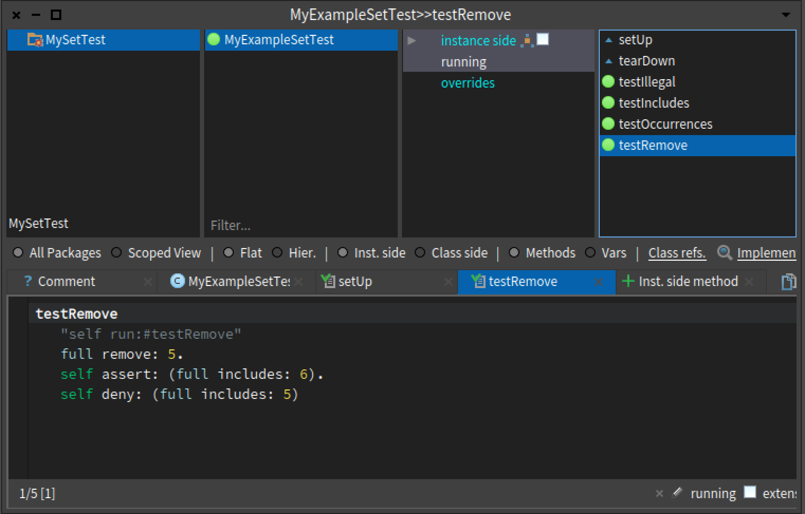

12 SUnit: Tests in Pharo
SUnit is a minimal yet powerful framework that supports the creation and validation of tests. As might be guessed from its name, the design of SUnit focussed on Unit Tests, but in fact it can be used for integration tests and functional tests as well. SUnit was originally developed by Kent Beck and subsequently extended by Joseph Pelrine and many contributors. SUnit is the mother of all the other xUnit frameworks. This chapter is as short as possible to show you that tests are simple. For a more in depth description of SUnit and different approaches of testing you can read the book: Testing in Pharo available at http://books.pharo.org. In this chapter we start by discussing why we test, and what makes a good test. We then present a series of small examples showing how to use SUnit. Finally, we look at the implementation of SUnit, so that you can understand how Pharo uses the power of reflection in supporting its tools. Note that the version documented in this chapter and used in Pharo is a modified version of SUnit3.3.
12.1 Introduction
The interest in testing and Test-Driven Development is not limited to Pharo. Automated testing has become a hallmark of the Agile software development movement, and any software developer concerned with improving software quality would do well to adopt it. Indeed, developers in many languages have come to appreciate the power of unit testing, and versions of xUnit now exist for every programming language. Neither testing, nor the building of test suites, is new. By now, everybody knows that tests are a good way to catch errors. eXtreme Programming, by making testing a core practice and by emphasizing automated tests, has helped to make testing productive and fun, rather than a chore that programmers dislike. SUnit is valuable because it allows us to write executable tests that are self-checking: the test itself defines what the correct result should be. It also helps us to organize tests into groups, to describe the context in which the tests must run, and to run a group of tests automatically. In less than two minutes you can write tests using SUnit, so instead of writing small code snippets in a playground, we encourage you to use SUnit and get all the advantages of stored and automatically executable tests.
12.2 Why testing is important
Unfortunately, many developers believe that tests are a waste of their time. After all, they do not write bugs, only other programmers do that. Most of us have said, at some time or other: I would write tests if I had more time. If you never write a bug, and if your code will never be changed in the future, then indeed tests are a waste of your time. However, this most likely also means that your application is trivial, or that it is not used by you or anyone else. Think of tests as an investment for the future: having a suite of tests is quite useful now, but it will be extremely useful when your application, or the environment in which it runs, changes in the future. Tests play several roles. First, they provide documentation of the functionality that they cover. This documentation is active: watching the tests pass tells you that the documentation is up to date. Second, tests help developers to confirm that some changes that they have just made to a package have not broken anything else in the system, and to find the parts that break when that confidence turns out to be misplaced. Finally, writing tests during, or even before, programming forces you to think about the functionality that you want to design, and how it should appear to the client code, rather than about how to implement it. By writing the tests first, i.e., before the code, you are compelled to state the context in which your functionality will run, the way it will interact with the client code, and the expected results. Your code will improve. Try it. We cannot test all aspects of any realistic application. Covering a complete application is simply impossible and should not be the goal of testing. Even with a good test suite some bugs will still creep into the application, where they can lay dormant waiting for an opportunity to damage your system. If you find that this has happened, take advantage of it! As soon as you uncover the bug, write a test that exposes it, run the test, and watch it fail. Now you can start to fix the bug: the tests will tell you when you are done.
12.3 What makes a good test?
Writing good tests is a skill that can be learned by practicing. Let us look at the properties that tests should have to get the maximum benefit.
- Tests should be repeatable. You should be able to run a test as often as you want, and always get the same answer.
- Tests should run without human intervention. You should be able to run them unattended.
- Tests should tell a story. Each test should cover one aspect of a piece of code. A test should act as a scenario that you or someone else can read to understand a piece of functionality.
- Tests should be validate one aspect. When a test fails it should show that a single aspect is broken. Indeed if a test covers multiple aspects, first it will break more often and second it will force developer to understand a larger set of options when fixing.
One consequence of such properties is that the number of tests should be somewhat proportional to the number of aspects to be tested: changing one aspect of the system should not break all the tests but only a limited number. This is important because having 100 tests fail should send a much stronger message than having 10 tests fail. However, it is not always possible to achieve this ideal: in particular, if a change breaks the initialization of an object, or the set-up of a test, it is likely to cause all of the tests to fail.
12.4 SUnit step by step
Writing tests is not difficult in itself.
Now let's write our first test, and show you the benefits of using SUnit.
We use an example that tests the class Set.
We will:
- Define a class to group of tests and benefit from SUnit behavior.
- Define test methods.
- Use assertions to verify expected results.
- Execute the tests.
Write the code and execute the tests as we go along.
12.5 Step 1: Create the test class
First you should create a new subclass of TestCase called MyExampleSetTest.
Add two instance variables so that your new class looks like this:
TestCase subclass: #MyExampleSetTest
instanceVariableNames: 'full empty'
classVariableNames: ''
package: 'MySetTest'We will use the class MyExampleSetTest to group all the tests related to the
class Set.
It defines the context in which the tests will run.
Here the context is described by the two instance variables full and empty that
we will use to represent a full and an empty set.
The name of the class is not critical, but by convention it should end in Test.
If you define a class called Pattern and call the corresponding test class PatternTest, the two classes will be alphabetized together in the browser (assuming that they are in the same package).
It is critical that your class is a subclass of TestCase.
12.6 Step 2: Initialize the test context
The message TestCase >> setUp defines the context in which the tests will run, a bit like an initialize method.
setUp is invoked before the execution of each test method defined in the test class.
Define the setUp method as follows, to initialize the empty variable to refer to an empty set and the full variable to refer to a set containing two elements.
MyExampleSetTest >> setUp
empty := Set new.
full := Set with: 5 with: 6In testing jargon the context is called the fixture for the test.
12.7 Step 3: Write some test methods
Let's create some tests by defining some methods in the class MyExampleSetTest.
Each method represents one test.
The names of the methods should start with the string 'test' so that SUnit will collect them into
test suites.
Test methods take no arguments.
Define the following test methods.
The first test, named testIncludes, tests the includes: method of Set.
The test says that sending the message includes: 5 to a set containing 5 should return true.
Clearly, this test relies on the fact that the setUp method has already run.
MyExampleSetTest >> testIncludes
self assert: (full includes: 5).
self assert: (full includes: 6)The second test, named testOccurrences, verifies that the number of occurrences of 5 in full set is equal to one, even if we
add another element 5 to the set.
MyExampleSetTest >> testOccurrences
self assert: (empty occurrencesOf: 0) equals: 0.
self assert: (full occurrencesOf: 5) equals: 1.
full add: 5.
self assert: (full occurrencesOf: 5) equals: 1Finally, we test that the set no longer contains the element 5 after we have removed it.
MyExampleSetTest >> testRemove
full remove: 5.
self assert: (full includes: 6).
self deny: (full includes: 5)Note the use of the method TestCase >> deny: to assert something that should
not be true.
aTest deny: anExpression is equivalent to aTest assert: anExpression not, but is much more readable.
12.8 Step 4: Run the tests
The easiest way to run the tests is directly from the browser.
Simply click on the icon of the class name, or on an individual test method, and select Run
tests (t) or press the icon.
The test methods will be flagged green or red, depending on whether they pass or not (as shown in Figure 12.1).
World > Test Runner.
Open a Test Runner, select the package MySetTest, and click the Run Selected button.
You can also run a single test (and print the usual pass/fail result summary) by
executing a Print it on the following code: MyExampleSetTest run: #testRemove.
Some people include an executable comment in their test methods that allows
running a test method with a Do it from the browser, as shown below.
MyExampleSetTest >> testRemove
full remove: 5.
self assert: (full includes: 6).
self deny: (full includes: 5)Introduce a bug in MyExampleSetTest >> testRemove and run the tests again.
For example, change 6 to 7, as in:
MyExampleSetTest >> testRemove
full remove: 5.
self assert: (full includes: 7).
self deny: (full includes: 5)The tests that did not pass (if any) are listed in the right-hand panes of the Test Runner. If you want to debug one, to see why it failed, just click on the name. Alternatively, you can execute one of the following expressions:
(MyExampleSetTest selector: #testRemove) debug
MyExampleSetTest debug: #testRemove12.9 Step 5: Interpret the results
The method assert: is defined in the class TestAsserter.
This is a superclass of TestCase and therefore all other TestCase subclasses and is responsible for all kind of test result assertions.
The assert: method expects a boolean argument, usually the value of a tested expression.
When the argument is true, the test passes; when the argument is false, the test fails.
There are actually three possible outcomes of a test: passing, failing, and raising an error.
- Passing. The outcome that we hope for is that all of the assertions in the test are true, in which case the test passes. Visually test runner tools, use green to indicate that a test passes.
- Failing. The obvious way is that one of the assertions can be false, causing the test to fail. Failing tests are associated with the yellow color.
- Error. The other possibility is that some kind of error occurs during the execution of the test, such as a message not understood error or an index out of bounds error. If an error occurs, the assertions in the test method may not have been executed at all, so we can't say that the test has failed; nevertheless, something is clearly wrong! Errors are usually colored in red.
You can try and modify your tests to provoke both errors and failures.
12.10 Using assert:equals:
The message assert:equals: offers a better report than assert: in case of error.
For example, the two following tests are equivalent.
However, the second one will report the value that the test is expecting: this makes easier to
understand the failure.
In this example, we suppose that aDateAndTime is an instance variable of the test class.
testAsDate
self assert: aDateAndTime asDate = ('February 29, 2004' asDate translateTo: 2 hours).testAsDate
self
assert: aDateAndTime asDate
equals: ('February 29, 2004' asDate translateTo: 2 hours).12.11 Skipping a test
Sometimes in the middle of a development, you may want to skip a test instead of
removing it or renaming it to prevent it from running.
You can simply invoke the TestAsserter message skip on your test case instance.
For example, the following test uses it to define a conditional test.
OCCompiledMethodIntegrityTest >> testPragmas
| newCompiledMethod originalCompiledMethod |
(Smalltalk globals hasClassNamed: #Compiler) ifFalse: [ ^ self skip ].
...This is handy to make sure that your automated execution of tests is reporting success.
12.12 Asserting exceptions
SUnit provides two additional important methods, TestAsserter >> should:raise:
and TestAsserter >> shouldnt:raise: for testing exception raising.
For example, you would use self should: aBlock raise: anException to test
that a particular exception is raised during the execution of aBlock. The
method below illustrates the use of should:raise:.
MyExampleSetTest >> testIllegal
self should: [ empty at: 5 ] raise: Error.
self should: [ empty at: 5 put: #zork ] raise: ErrorTry running this test. Note that the first argument of the should: and
shouldnt: methods is a block that contains the expression to be executed.
12.13 Programmatically running tests
Normally, you will run your tests using the Test Runner or using your code browser.
Running a single test
If you don't want to launch the Test Runner UI from the World menu, you
can execute TestRunner open. You can also run a single test as follows:
MyExampleSetTest run: #testRemove
>>> 1 run, 1 passed, 0 failed, 0 errorsRunning all the tests in a test class
Any subclass of TestCase responds to the message suite, which will build
a test suite that contains all the methods in the class whose names start with
the string test.
To run the tests in the suite, send it the message run. For example:
MyExampleSetTest suite run
>>> 4 run, 4 passed, 0 failed, 0 errors12.14 Conclusion
This chapter explained why tests are an important investment in the future of
your code. We explained in a step-by-step fashion how to define a few tests for
the class Set.
- To maximize their potential, unit tests should be fast, repeatable, independent of any direct human interaction and cover a single unit of functionality.
- Tests for a class called
MyClassbelong in a class namedMyClassTest, which should be introduced as a subclass ofTestCase. - Initialize your test data in a
setUpmethod. - Each test method should start with the word test.
- Use the
TestCasemethodsassert:,deny:and others to make assertions. - Run tests!
Several software development methodologies such as eXtreme Programming and Test-Driven Development (TDD) advocate writing tests before writing code. This may seem to go against our deep instincts as software developers. All we can say is: go ahead and try it. We have found that writing the tests before the code helps us to know what we want to code, helps us know when we are done, and helps us conceptualize the functionality of a class and to design its interface. Moreover, test-first development gives us the courage to go fast, because we are not afraid that we will forget something important.